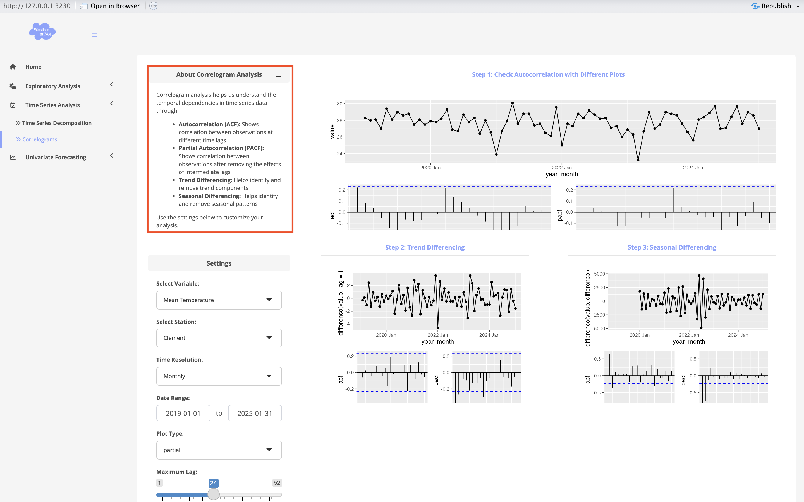

User_Guide
Weather or Not: Predicting The Unpredictable
Visual Analytics and Applications — Group 13
Special Thanks to Our Instructor: Dr. Kam Tin Seong
About the Dashboard
This dashboard offers a variety of visualization tools to analyze Singapore’s weather patterns.
Our platform combines historical data analysis with forecasting capabilities to help you understand and predict weather patterns effectively.
- Interactive Visualizations: Explore weather patterns through dynamic charts and maps
- Time Series Analysis: Decompose and analyze weather trends
- Weather Forecasting: Predict future weather patterns using various models
Exploratory Analysis: Line Chart
The Line Chart module helps you explore how a weather variable changes over time at a selected station. It’s especially useful for identifying long-term trends, seasonal cycles, and the effects of monsoon periods in Singapore.

How to Use This Module (Step-by-Step)
Choose a Variable
Use the dropdown to select the weather variable you want to analyze. Options include:- Mean / Min / Max Temperature
- Rainfall
- Wind Speed (Mean / Max)
- Mean / Min / Max Temperature
Pick a Station
Type or select from the list of available weather stations. For example, you can chooseChangi (East),Newton, etc.Set the Time Resolution
Decide how you want to group the data:- Daily: for fine-grained fluctuations
- Weekly: for smoother patterns
- Monthly: best for observing seasonal trends
- Daily: for fine-grained fluctuations
Select the Date Range
Use the calendar input to define the period you want to analyze (e.g., 2019-01-01 to 2025-01-31).Toggle Monsoon Periods (Optional)
Want to see how monsoons affect weather? Check or uncheck the Show Monsoon Periods box under Display Options.- Light blue = Northeast Monsoon (Dec to early Mar)
- Light green = Southwest Monsoon (Jun to Sep)
- Light blue = Northeast Monsoon (Dec to early Mar)

- Click “Update View”
Once you’ve set all your preferences, hit the Update View button to generate the chart.
- On the right, a time series line chart shows how the selected variable (e.g., mean temperature) changes over time.
- If monsoon display is enabled, colored bands will appear in the background to highlight the monsoon periods.
Summary Statistics
- Below the chart, a summary statistics panel shows key stats for the selected station and variable:
- Minimum and Maximum
- Quartiles (Q1, Q2, Q3)
- Mean
- Standard Deviation (SD)
Extra Tip
You can click the “About Monsoon” panel at the top to learn more about Singapore’s seasonal weather patterns and how they may impact your analysis.

Exploratory Analysis: Ridge Plot
The Ridge Plot module lets you compare the monthly distribution of a selected weather variable across multiple stations using visually appealing ridgeline plots. It’s a great way to spot seasonal trends and variations across different locations.

How to Use This Module (Step-by-Step)
Choose a Variable
Select Stations
You can only select up to 4 weather stations at once. This limit is intentionally set to keep the plot clear and readable.If you select more than 4 stations, a warning will appear prompting you to reduce the number of selections.

Set Time Resolution
- Monthly (default, y-axis is explicitly labeled with months to compare seasonal distributions)
Choose a Date Range
Click “Update View”
Summary Statistics
Click the right tab : - A clean table summarizes key statistics by station, including:
- Minimum,Quartiles,Median,Mean,Maximum

You can toggle between these two tabs any time to switch between visual and numeric summaries.
Why Limit to 4 Stations?
Including too many stations on one ridgeline plot can make it hard to read. To ensure visual clarity and keep the plot user-friendly, we’ve limited the selection to a maximum of 4 stations at once. This helps users focus on meaningful comparisons without overwhelming the display.
Exploratory Analysis: Geofacet
The Geofacet module is designed to help you compare weather trends across multiple stations in Singapore, using small multiples arranged by geography. It provides two tabs — one to view all stations at once, and another to focus on a selected subset.

How to Use This Module (Step-by-Step)
Select Stations
From the list, choose one or more weather stations to analyze. You can either:- View all stations (left tab: All Stations)
- Focus on a few specific stations (right tab: Selected Stations) for clearer comparisons.
Choose a Variable
Set the Time Resolution
Pick a Date Range
Click “Update View”
Selected Stations Tab
- A single line chart overlays the selected stations for direct comparison.
- This view is helpful when you’re only interested in a few locations and want to analyze their trends side-by-side with greater visual clarity.
- A color legend on the right distinguishes each station.

Exploratory Analysis: Isohyet Map
The Isohyet Map module lets you perform spatial interpolation to visualize how a weather variable (like temperature or rainfall) is distributed across Singapore.

How to Use This Module (Step-by-Step)
Choose a Variable
Set Time Resolution
Pick a Date Range
IDW Nmax (Groups) – Controls how many neighboring points are considered.
Inverse Distance Power – Controls how much nearby points influence the prediction.
- You can leave the default settings or adjust them to experiment. If you’re not using IDW, you can skip this section.
- Select Variogram Model
Choose one of the options (e.g., Gau, Mat, Per). - Run Model
📊 Quick Guide: Variogram Models
| Model | Description |
|---|---|
Gau |
Produces a smooth curve. Good when nearby locations are highly correlated. |
Mat |
Offers flexible smoothness. Balances between Gaussian and exponential types. Often used in geostatistics. |
Per |
Suitable for seasonal or repeating patterns (e.g., weather cycles). |
🔍 Try different models and see how the Kriging map changes.
💡 Need More Explanation?
If you’re curious about how spatial interpolation works, just click the “About Spatial Interpolation” panel at the top — it gives a friendly explanation of IDW, Kriging, and Variograms.

Time Series Analysis: STL Decomposition
The STL Decomposition module helps you break down a time series into three components — Trend, Seasonal, and Remainder — so you can better understand long-term and seasonal behaviors in your weather data.

How to Use This Module (Step-by-Step)
1. Select Variable
2. Select Station
Pick a single station (e.g., Clementi) to focus the decomposition on.
3. Set Time Resolution
4. Choose Date Range
5. After setting everything, hit “Run Model”
STL Decomposition Plot (Top Right)
This shows how your time series breaks down into:
- Trend: Long-term movement of the variable
- Seasonal: Repeating seasonal patterns (e.g., annual temperature cycle)
- Remainder: What’s left over after removing trend and seasonality.
You’ll see these three components stacked clearly over time.
Cycle Plot by Month (Bottom Right)
This plot shows the seasonal pattern by month: - Each panel (Jan–Dec) shows how the variable fluctuates in that month across years. - Helps you identify which months are consistently higher or lower than the average. - The blue line in each panel represents the monthly average baseline.
💡 Tip
If you’re not sure what STL means, click the “About STL Decomposition” panel — it gives a friendly explanation of each component!
Time Series Analysis: Correlograms
The Correlogram Analysis module helps you explore autocorrelation structures in your time series data. It provides tools to assess whether your series has trend or seasonality, and whether differencing is needed for modeling.

How to Use This Module (Step-by-Step)
1. Select Variable
2. Select Station
3. Set Time Resolution
4. Choose Date Range
5. Choose Plot Type
Select one of the three plot styles to focus on:
- partial shows PACF & ACF (default)
- scatter shows lag scatter plots (for visual correlation)
- histogram shows the distribution of observed values
6. Adjust Maximum Lag
Use the slider to set how far into the past the autocorrelation should be checked (e.g., 24 months).
7. After setting everything, hit “ Run Analysis”
What You’ll See
- Time Series Line Plot of the selected variable
- ACF (Autocorrelation Function) – measures how current values relate to past ones
- PACF (Partial Autocorrelation) – filters out indirect effects from intermediate lags
A differenced time series that removes trend (using lag = 1)
Corresponding ACF/PACF plots show whether autocorrelation is reduced
Helps decide whether trend differencing is necessary
A second round of differencing, targeting seasonality
Usually done at lag = 12 (for monthly data)
Final ACF/PACF plots help check if the series is now close to white noise
Tips
- Use this module before model training to diagnose time series structure
- If strong spikes appear in ACF/PACF, differencing may be required
- Blue dashed lines = significance threshold. Bars that exceed them are statistically significant
More Info?
If you want to understand ACF/PACF better, open the About Correlogram Analysis panel at the top — it has a quick explanation.

Univariate Forecasting: Model Training
The Model Training module enables users to build and evaluate time series forecasting models using historical weather data. Users can select variables, define the training period, and choose from multiple Exponential Smoothing (ETS) and ARIMA-based models.

💡 Tip
If you see spinning circles when the page loads — don’t worry!
That just means the dashboard is waiting for you to select at least one model and click Run Training. Once you do, results will appear on the right side of the screen.
How to Use This Module (Step-by-Step)
1. Select Variable
2. Select Station
3. Set Time Resolution
4. Choose Date Range
5. Model Selection
A variety of univariate models are available for training:
| Model | Description |
|---|---|
| ETS-ANN | Simple Exponential Smoothing — assumes no trend or seasonality |
| ETS-AAN | Holt’s Linear Trend — accounts for a linear trend, but no seasonality |
| ETS-AAA | Holt-Winters Additive — handles both trend and additive seasonality |
| ETS-MMM | Holt-Winters Multiplicative — for multiplicative seasonal effects |
| ETS-MAM | Multiplicative Holt-Winters with Additive Trend — mixed components |
| ETS-MMN | Multiplicative Trend with No Seasonality — for growing or shrinking series |
| Auto ETS | Automatically selects the best ETS model based on AIC/BIC |
| Auto ARIMA | Automatically finds the best ARIMA model using statistical tests |
Univariate Forecasting: Model Forecasting
This module provides an end-to-end pipeline for training and evaluating time series forecasting models based on univariate inputs. Users can select weather variables (e.g., mean temperature) at a chosen station and generate short-term forecasts using various models.

How to Use This Module (Step-by-Step)
Select Variable
Select Station
Set Time Resolution
Set Forecast Period
Use the slider to select how many steps (months) you want to forecast, e.g., 12 or 24 months.
Select Models
Once everything is selected, click the Run Training button.
💡 If you initially see three rotating loading rings — don’t worry!
The system is simply waiting for you to select a model and trigger the training process.
Available Models
| Model Code | Description |
|---|---|
| ETS-ANN | Simple exponential smoothing (no trend, no seasonality) |
| ETS-AAN | Holt’s linear trend model |
| ETS-AAA | Holt-Winters additive trend and seasonality |
| ETS-MMM | Holt-Winters multiplicative trend and seasonality |
| ETS-MAM | Multiplicative seasonality with additive trend |
| ETS-MMN | Multiplicative trend only (no seasonality) |
| Auto ETS | Automatically selects the best ETS model |
| Auto ARIMA | Automatically identifies the optimal ARIMA configuration |
What You’ll See
Model Training Plot (Top Right)
Visualizes actual vs predicted values with 95% confidence intervals. Each selected model is color-coded.Model Evaluation Table (Bottom Center)
Shows AIC, BIC, and RMSE scores to help you compare models.Residuals Plot (Bottom Right)
Displays the residuals for each model to check whether errors are randomly distributed.
Forecast Output
Forecast Plot (Top Right)
Shows the historical data and the forecasted values for the selected period, with confidence intervals shaded.Forecast Model Parameters (Bottom Right)
Lists key parameters from the fitted models — including coefficients, standard errors, and p-values — to help interpret the models’ behavior.